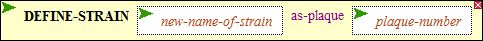
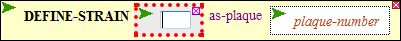

|
This function (see A) enables you to grow up and name a phage strain within a plaque
obtained in a mutagenesis or cross. Unless you give a strain a name, you cannot use it in
later experiments. Once named, the strain will appear on your VARIABLES menu.
|
Screenshot A

|
To provide a name for the new phage strain, click the new-name-of-strain entry box (the box will turn white and become highlighted with red dots; see B). Then type in the name you want, and press the Enter key on your keyboard to close the entry box. The name cannot be a number, but it can contain numbers. It cannot contain blanks. You'll probably generate lots of strains, so be systematic. For example, Francis Crick named his strains FC0, FC1, etc. You can reuse names if you like, destroying the previous definition.
|
Screenshot B

|
To provide the number of the plaque (taken from the previous experiment) that will be assigned a name, click the plaque-number entry box (see A). Then type the number you want, taken from the popup results from the previous experiment (see C). Press the Enter key to close the entry box.
WARNING! Even though a popup window is on your screen, if it is not the results most recently executed experiment, it will be ignored!
When both boxes have been filled in, then execute the function by double clicking DEFINE-STRAIN
Output
You should receive a confirmatory message at the bottom of your screen, and the new strain should appear on your
VARIABLES menu.
|
Screenshot C

|
|